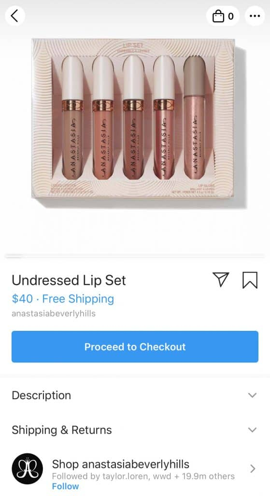
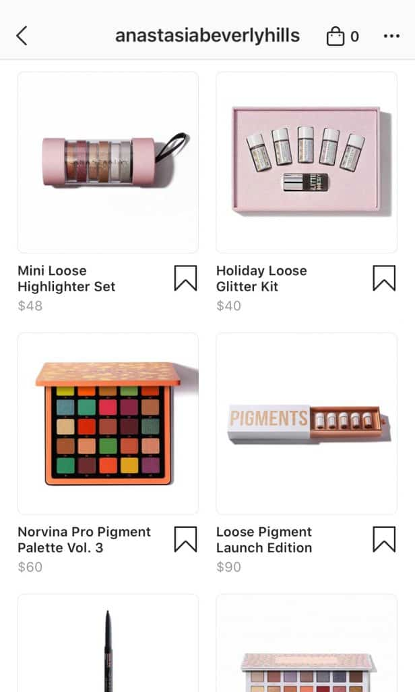

Since the end of 2016, businesses have had the option to make a “shoppable Instagram.” The feature went global in 2018, and is now available in 46 countries. It’s a steadily growing trend, an incredible business tool, and directly contributes to Instagram’s spot as the #1 marketing platform. As the native integration gains more and more traction, people want to know more about creating a shoppable Instagram feed!
With Instagram’s checkout feature, Instagram users can make purchases directly from Instagram without ever leaving the app. If you’ve got a business on Instagram and you’re not already using a Shoppable Instagram feed, you should be! Read on to learn all about shoppable Instagrams and how to get started…
What Is A Shoppable Instagram?
A shoppable Instagram is what it sounds like – an Instagram feed where you can buy products directly from the feed. Instagram and Shopify started testing the feature in late 2016, so if you’ve seen it around, that’s why. Since going global in 2018, though, shoppable Instagrams have solidified Instagram’s place as the world’s #1 marketing platform.
If you’ve got a shoppable Instagram feed, users can buy products advertised from businesses or brands directly in the app. Here’s why that’s a big deal:
Why Use Shoppable Instagram?
Instagram’s ascent to one of the world’s most valuable business tools is evident to anybody who’s been watching. Gone are the days of filters, hello to full-blown sales campaigns. With shoppable Instagrams, it’s safe to say they’ve reached the stage of the world’s #1 business channels.
Before shoppable Instagrams, businesses faced significant challenges in linking to their products directly from their pages or tagging them in posts. Of course, there have always been ways around this, like Linktree and Later’s linkin.bio feature, but it hasn’t been convenient. Shoppable Instagrams, however, have changed this completely.
The ability to make a shoppable Instagram is huge news for brands and businesses too small to have the option to use clickable Instagram stories. Having the option to link products and send traffic straight from Instagram posts, shoppable Instagrams open up business opportunities to small and large providers alike.
With a shoppable Instagram, not only can users browse tagged products in a post. They can also click on the “Shop” feature on an Instagram profile and browse all the products available for purchase. This is an incredibly easy and convenient way to use Instagram that online shoppers will love.
Using the Checkout Feature
The cherry on top of the shoppable Instagram, however, to be the Instagram checkout feature. It works like this: you’d like to buy a product in a tagged post. You tap on the product and are taken to the product page, and at the bottom you’ll see a “Checkout on Instagram” button. Select options such as size and color, and then continue to payment directly on the Instagram app. You’ll be asked to fill out name, e-mail, billing and shipping information the first time you checkout. Your information will be saved for your convenience the next time you shop, and you can even track your purchase within the app itself. FYI: Checkout for Instagram is currently only available within the U.S.

Getting Started
So, you’re on board….now how do you set it up? The good news is it’s very easy. However, there are certain requirements you need to fulfill before you can get started with a shoppable Instagram.
- Shoppable Instagram is currently available in 46 countries, including the U.S., Germany, Brazil and Morocco. You’ll need to be located in one of them to get started.
- You need an Instagram Business account. It’s easy to switch – check out our guide here.
- You have to sell physical goods. Sorry, but if you’re selling a service, you’ll have to wait for Instagram to roll out their next feature.
- You’ll need your business profile connected to Facebook. This one makes sense, since Facebook owns Shopify. You can create and manage these on your business’s Facebook Page, BusinessManager, Shopify or BigCommerce.
Here’s how to get started:
How to Set Up a Shoppable Instagram With Business Manager
You’ll need to go to the Business Manager account that owns the Facebook Page linked to your Instagram.
Once you’re there, either find the catalog you want to link or create a new catalog. Give your catalog a name and then start adding the products you’d like to sell to it.
How to Set Up A Shoppable Instagram with Your Facebook Page (US only)
If you don’t want to bother with Business Manager, you can add a “Shop section” directly to your Facebook page. This will allow you to sell products directly from your Facebook page, making it easier to link to Instagram.
Once you’ve agreed to Facebook’s terms and conditions, you’ll need to select a checkout option from “Message to Buy”, “Checkout on Facebook” or “Checkout on Another Website.” Pick how you’d like your customers to check out. But don’t use the “message to buy” if you want your followers to be able to buy products on Instagram – it doesn’t work with shoppable Instagram features! Select your payment method and you’re ready to go.
How to Set Up A Shoppable Instagram with Shopify
Shopify integration with Instagram is extremely easy if you have a paid account. You’ll need a Facebook sales channel to use it. Once you’ve done that, adding the Instagram sales channel is as easy as a piece of cake. Just go to the Shopify admin and click the “+” button next to the “Sales Channels” heading. Then click Instagram and add channel. After you’ve authenticated with Facebook, go to “Shopping” in the Instagram business app and click enable. You’re ready to go!
How to Set Up A Shoppable Instagram with Big Commerce
If you want to use BigCommerce to set up a shoppable Instagram, the first thing you’ll need to do is connect it to your Facebook account (if you haven’t already). Fill in the details on BigCommerce and Facebook, then in your channel manager, click “Get Started” next to Instagram. That’s it!
Connecting Your Product Catalog
Before you can use shoppable Instagrams, Instagram will review your account to ensure you fall in compliance with all the shoppable terms and conditions. Once you’re approved, you’ll receive a notification, and you’re ready to begin using the wonders of a shoppable Instagram feed.
But before you can start making online sales, there’s one last important step. It’s time to connect your product catalog. Go back to the Shopping section in Instagram and tap on “Products.” Select the product catalog you’d like to use, and then click “done.”

After you’re finished you can immediately begin tagging products in your Instagram posts. It’s quite similar to tagging other users in Instagram posts – just press “Tag Products” and type in the name of the ones you want to tag!
Shoppable Instagrams Are the Future
Instagram was made for sales, and the ability to create a shoppable Instagram is the icing on the cake. For business and people looking to use their brand to boost online sales, it’s a no-brainer. With the recent checkout features and the ease of linking preexisting business pages to a shoppable Instagram there’s no excuse not to have one. If you’re in a country where Instagram supports this feature and you’re not already using it, what are you waiting for? Use the guide above and get started with your very own shoppable Instagram today!


2 Comments